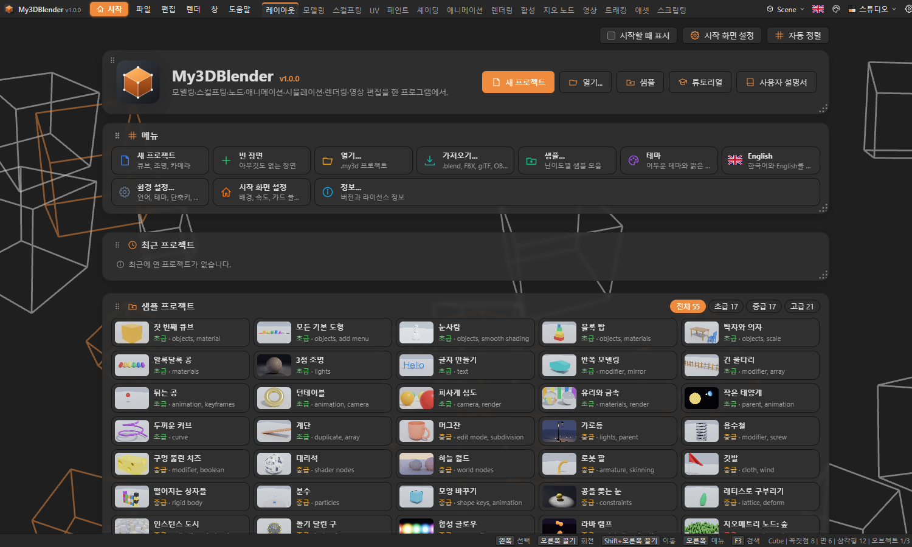
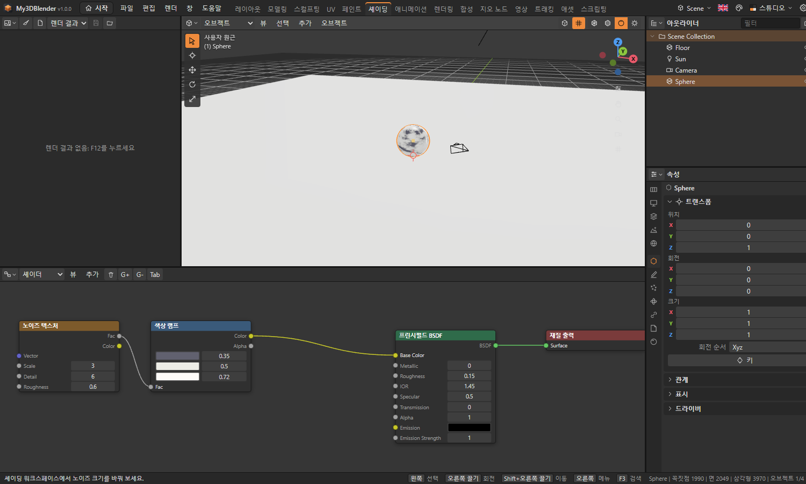
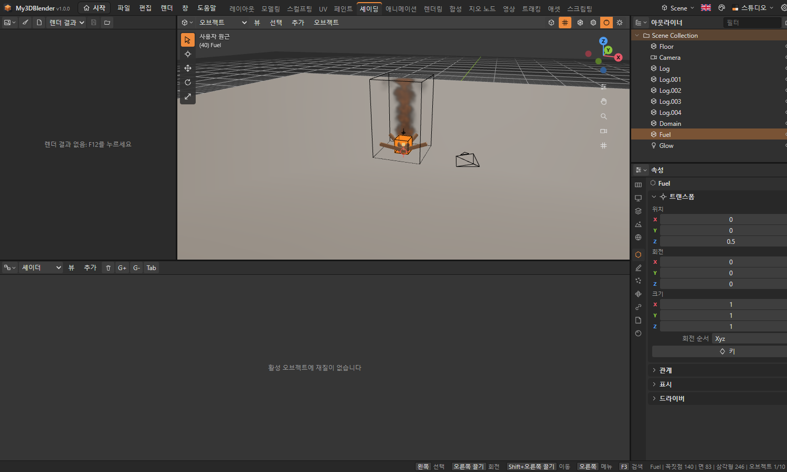
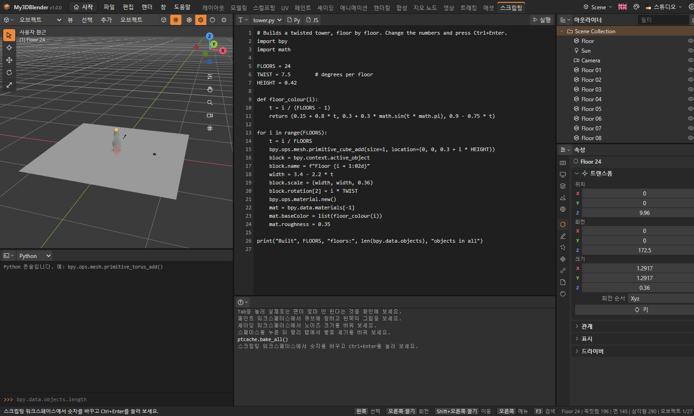
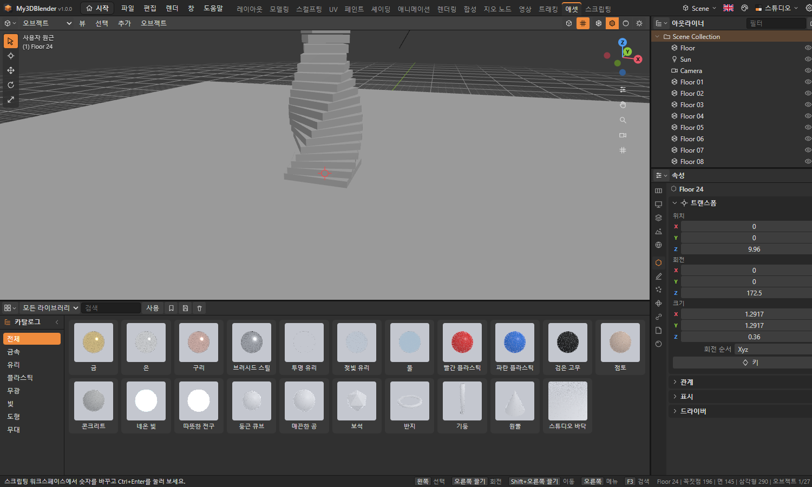
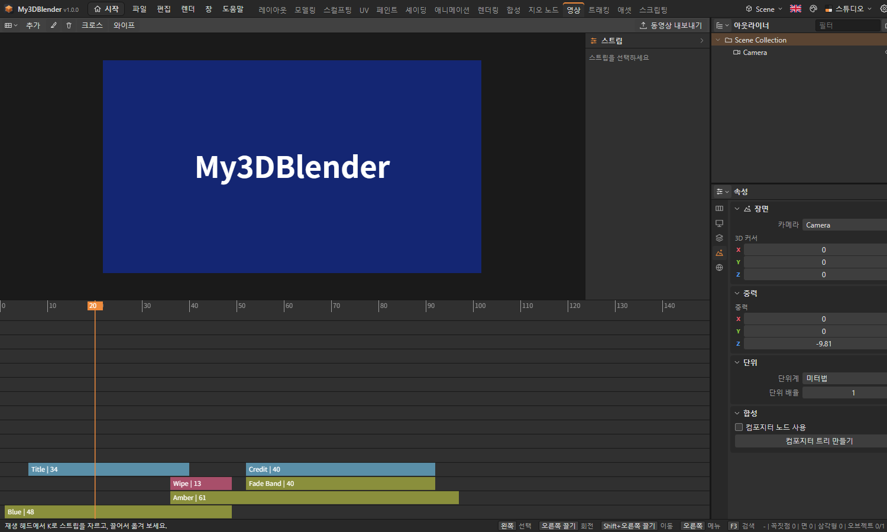
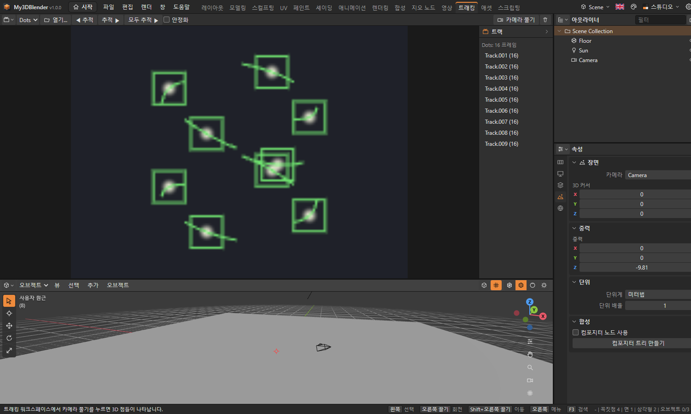

My3DBlender 사용자 설명서
My3DBlender는 웹 브라우저, Windows, macOS, Linux에서 실행되는 3D 제작 프로그램입니다. 모델링, 스컬프팅, 재질과 노드, 애니메이션, 물리, 렌더링, 스크립팅을 한 화면에서 다룹니다. Blender에서 영감을 받은 독립 프로그램이며 Blender Foundation과 관련이 없습니다.
아직 Blender의 모든 기능이 구현된 것은 아닙니다. 어떤 기능이 완료·부분·예정인지는 도움말 › 기능 구현 현황에서 항목별로 확인할 수 있습니다.
시작 화면
프로그램을 켜면 시작 화면이 나오고, 튜토리얼을 실행할지 묻는 창이 뜹니다. 튜토리얼 실행을 누르면 창 안에서 단계별 실습이 시작됩니다. 어디를 볼지 표시되고, 직접 하면 저절로 체크되며, 대신 해 주기로 넘어갈 수도 있습니다. 도움말 › 튜토리얼로 언제든 다시 시작합니다. 이 창의 시작할 때 이 창 표시를 끄면 다음부터 뜨지 않으며, 환경 설정 › 시작과 튜토리얼에서 다시 켤 수 있습니다. 맨 위 막대의 이름 오른쪽 시작 단추로 언제든 다시 열고 닫습니다. 움직이는 배경 위에 반투명 카드가 놓여 있고, 내용이 길면 화면이 위아래로 스크롤됩니다.

- 맨 위 도구: 시작할 때 표시, 시작 화면 설정, 자동 정렬
- 소개 카드: 프로그램 이름, 새 프로젝트, 열기, 샘플, 튜토리얼, 사용자 설명서
- 메뉴 카드: 새 프로젝트, 빈 장면, 열기, 가져오기, 샘플, 테마, 언어, 환경 설정, 정보, 끝내기(데스크톱)
- 최근 프로젝트 카드: 최근에 연 파일. 휴지통 단추로 목록에서 뺍니다(데스크톱)
- 샘플 프로젝트 카드: 최근 프로젝트 아래의 별도 섹션. 작은 그림과 함께 난이도별로 고릅니다
- 테마 카드: 어두운 테마와 밝은 테마
- 배경 카드: 움직이는 배경 20종, 자동 변경, 속도, 카드 불투명도
- 맨 아래 줄: 버전, 제작자
카드는 제목 왼쪽의 점 손잡이를 끌어 옮기고, 오른쪽 아래 모서리를 끌어 크기를 바꿉니다. 끄는 동안 반투명한 복사본이 따라오고 놓일 자리가 점선으로 표시되며, 다른 카드는 겹치지 않게 비켜납니다. 모서리를 두 번 누르면 내용에 맞는 크기로 돌아가고, 자동 정렬을 누르면 전체가 기본 배치로 돌아갑니다. 배경과 카드 설정은 환경 설정에서도 바꿀 수 있습니다.
샘플 프로젝트
sample 폴더에 난이도별 샘플이 있습니다. 시작 화면의 샘플 프로젝트 섹션에서 고르거나, 파일 › 샘플로 큰 그림이 있는 샘플 창을 엽니다. 난이도를 고르고 눌러 엽니다. 샘플을 열면 상태 표시줄에 해 볼 것이 나옵니다. 저장할 때는 새 이름을 묻기 때문에 원본은 바뀌지 않습니다. 시뮬레이션이 있는 샘플은 열 때 자동으로 베이크합니다.
| 난이도 | 내용 |
|---|---|
| 초급 | 도형 추가, 이동, 재질, 조명, 키프레임, 모디파이어 하나 |
| 중급 | 여러 모디파이어, 셰이더·월드 노드, 리그, 천, 강체, 파티클, 인스턴스, 합성 |
| 고급 | 지오메트리 노드, 연기·불·액체, 오션, Python, 애드온, 노드 그룹, OSL, 시퀀서, 모션 트래킹, NURBS, 멀티레졸루션 |
화면 구성
맨 위의 막대에는 파일·편집·렌더·창·도움말 메뉴, 워크스페이스 탭, 언어·테마·환경 설정·정보 버튼이 있습니다. 그 아래는 에디터 영역들이고 맨 아래는 상태 표시줄입니다.
각 영역의 왼쪽 위 버튼으로 에디터 종류를 바꿉니다. 영역 머리글에서 오른쪽 버튼을 누르면 분할·합치기·최대화 메뉴가 나옵니다. 영역 사이의 경계선을 끌면 크기가 바뀝니다.
| 워크스페이스 | 용도 |
|---|---|
| 레이아웃 | 장면 배치와 타임라인 |
| 모델링 | 메시 편집 |
| 스컬프팅 | 브러시로 형태 다듬기 |
| UV | UV 펼치기와 수정 |
| 페인트 | 텍스처에 칠하기 |
| 셰이딩 | 재질과 셰이더 노드 |
| 애니메이션 | 도프 시트와 키프레임 |
| 렌더링 | 렌더 결과와 렌더 설정 |
| 합성 | 컴포지터 노드 |
| 지오 노드 | 노드로 형태 만들기 |
| 영상 | 비디오 시퀀서 |
| 트래킹 | 무비 클립과 카메라 풀기 |
| 애셋 | 애셋 브라우저 |
| 스크립팅 | 스크립트와 콘솔 |
3D 뷰 조작
| 조작 | 입력 |
|---|---|
| 보는 방향 회전 | 오른쪽 버튼 끌기, 가운데 버튼 끌기, Alt + 왼쪽 버튼 끌기, 또는 오른쪽 위 축 표시 끌기 |
| 이동 | Shift + 오른쪽 또는 가운데 버튼 끌기, 또는 손 모양 단추 끌기 |
| 확대·축소 | 휠, Ctrl + 오른쪽 또는 가운데 버튼 끌기, 또는 돋보기 단추 끌기 |
| 앞·오른쪽·위 시점 | 숫자패드 1·3·7 (Ctrl을 함께 누르면 반대쪽) |
| 카메라 시점 | 숫자패드 0 |
| 원근·직교 전환 | 숫자패드 5 |
| 전체 맞춤, 선택 맞춤 | Home, 숫자패드 . |
| 도구 모음, 사이드바 | T, N |
| 연산자 검색 | F3 |
오른쪽 버튼은 끌지 않고 누르면 메뉴가 열립니다. 격자는 5칸마다 굵은 선이 있으며, 확대·축소하면 칸 간격이 5배씩 바뀌어 다시 그려집니다. 격자는 항상 도형 뒤에 그려지고, 축 방향에서 볼 때는 그 면에 맞게 서서 보입니다. 오른쪽 열과 사이드 패널은 제목 줄의 화살표로 접고 펼칩니다. Z를 누르면 셰이딩을 고르는 원형 메뉴가 뜹니다. 속성 편집기 위쪽의 검색 칸은 현재 탭의 설정을 찾아 줍니다. 편집 모드에서 K는 나이프입니다. 차례로 누르고 Enter로 자르며, C는 뒤까지 관통합니다. Shift+Tab은 스냅을 켜고 끄며, 그 옆 메뉴에서 꼭짓점, 엣지, 면, 오브젝트 중심 중 대상을 고릅니다. 왼쪽 버튼 끌기를 보기 회전으로 바꾸려면 환경 설정 › 화면 조작을 씁니다. 터치패드에서는 오른쪽 위의 축 표시와 손 모양, 돋보기 단추를 끌면 됩니다. 축을 클릭하면 그 방향에서 보는 시점으로 바뀝니다. 머리글 오른쪽의 버튼으로 와이어프레임·솔리드·재질 미리보기·렌더 셰이딩을 고릅니다.
오브젝트
왼쪽 버튼으로 선택하고, Shift를 누르면 선택에 더합니다. 빈 곳에서 끌면 박스 선택입니다. Shift + 오른쪽 버튼으로 3D 커서를 놓으면 새 오브젝트가 그 자리에 생깁니다.
| 조작 | 입력 |
|---|---|
| 이동·회전·크기 | G, R, S |
| 축 제한 | 이어서 X, Y, Z |
| 수치 입력 | 이어서 숫자, Enter로 확정 |
| 취소 | Esc 또는 오른쪽 버튼 |
| 추가 메뉴 | Shift + A |
| 복제, 삭제 | Shift + D, X |
| 숨기기, 숨김 해제 | H, Alt + H |
| 합치기, 부모 설정 | Ctrl + J, Ctrl + P |
| 키프레임 삽입 | I |
물체 자체를 돌리려면 선택한 뒤 R을 누르고 마우스를 움직여 클릭하거나, 왼쪽 도구 모음의 회전 도구를 골라 나타나는 고리를 끕니다. 이동·크기 도구도 같은 방식입니다.
인스턴스
복사본을 만들지 않고 같은 것을 여러 번 그립니다. 원본을 바꾸면 전부 바뀝니다.
- 컬렉션 인스턴스: 컬렉션을 만들고 물체를 넣은 뒤 추가 › 컬렉션 인스턴스에서 고릅니다. 원본 컬렉션은 꺼 두어도 됩니다.
- 꼭짓점·면에 놓기: 자식 물체를 부모로 묶고 오브젝트 › 인스턴싱에서 꼭짓점 또는 면을 고릅니다.
- 오브젝트 › 인스턴싱 › 인스턴스를 실제 오브젝트로는 각각을 보통 오브젝트로 바꿉니다.
여러 장면
맨 위 막대 오른쪽의 장면 단추에서 새 장면, 이 장면 복사, 장면 삭제, 장면 전환을 합니다. 재질과 이미지는 장면끼리 공유합니다.
NURBS 서피스
추가 › 서피스에서 패치, 원기둥, 구, 토러스를 고릅니다. Tab으로 편집 모드에 들어가면 조정점이 보이며, 눌러 선택하고 G·R·S로 옮깁니다. 커브도 같습니다. 해상도와 차수는 오브젝트 데이터 탭에 있습니다.
메시 편집
Tab으로 편집 모드에 들어갑니다. 1·2·3으로 꼭짓점·엣지·면 선택을 고릅니다.
| 도구 | 입력 |
|---|---|
| 돌출 | E |
| 면 인셋 | I |
| 베벨 | Ctrl + B |
| 루프 컷 | Ctrl + R (마우스에 가까운 엣지 기준) |
| 엣지/면 만들기 | F |
| 병합 | M |
| 삭제 | X |
| 연결 선택 | L, Ctrl + L |
| 선택 분리 | P |
| 찢기 | V |
| 비례 편집 켜기·끄기 | O (변형 중 휠로 범위 조절) |
| 엣지 크리즈 | Shift + E |
| 펼치기 | U |
인셋이나 베벨처럼 값이 있는 도구를 쓰면 3D 뷰 왼쪽 아래에 마지막 작업 조정 패널이 나타납니다. 값을 바꾸면 결과가 그 자리에서 다시 계산됩니다.
메시 메뉴의 엣지 항목에서 심, 샤프, 크리즈를 표시합니다. 표시한 엣지는 편집 모드에서 빨강(심), 청록(샤프), 분홍(크리즈)으로 보입니다. 샤프는 부드러운 셰이딩을 그 엣지에서 끊고, 크리즈는 서브디비전이 그 엣지를 둥글리지 못하게 합니다. 노멀 항목에서 사용자 분할 노멀을 설정할 수 있습니다.
UV 펼치기
엣지를 고르고 메시 › 엣지 › 심 표시로 자를 곳을 정한 뒤, U로 펼칩니다. 심을 따라 섬으로 나뉘고, 각 섬은 각도를 최대한 유지하도록(LSCM) 평평하게 펴져 정사각형 안에 배치됩니다. 심이 없는 닫힌 메시는 면 방향별로 자동으로 잘라 펼칩니다.
모디파이어
속성 에디터의 모디파이어 탭에서 추가합니다. 원본 메시를 바꾸지 않고 순서대로 적용되며, 적용 버튼을 누르면 메시에 굳힙니다. 서브디비전 표면, 미러, 배열, 솔리디파이, 베벨, 디시메이트, 불리언, 스크류, 용접, 와이어프레임, 변위, 웨이브, 스무스, 간단 변형, 캐스트, 슈링크랩, 래티스, 아마추어, 지오메트리 노드, 리메시, 멀티레졸루션, 스킨, 오션 등이 있습니다. 스킨은 엣지 주위에 표면을 만들고, 오션은 프레임에 따라 움직이는 바다 면을 만듭니다. 멀티레졸루션은 패널의 세분화 버튼으로 단계를 올리고, 스컬프트 모드에서 칠하면 원본 메시는 그대로 둔 채 맨 위 단계에 저장됩니다.
스컬프트와 페인트
머리글의 모드 목록에서 스컬프트, 꼭짓점 페인트, 웨이트 페인트, 텍스처 페인트를 고릅니다. 3D 뷰에서 끌면 칠해지고, Ctrl을 누르면 반대로 작용합니다. 대괄호 키나 Ctrl + 휠로 브러시 크기를 바꿉니다. 브러시 설정은 N 사이드바에 있습니다.
스컬프트에서는 사이드바의 다이나믹 토폴로지를 켜면 브러시 주변 메시가 디테일 크기에 맞게 잘게 나뉩니다. 복셀 리메시는 메시 전체를 고른 면으로 다시 만듭니다.
텍스처 페인트
페인트 워크스페이스로 가서 사이드바의 칠할 텍스처 추가를 누르면 이미지를 만들어 재질에 연결합니다. UV가 없거나 면끼리 겹치면 먼저 펼칩니다. 모델 위를 끌면 칠해지고, 왼쪽 이미지 에디터에 그림이 함께 나타납니다. 이미지 에디터 머리글의 브러시 버튼을 켜면 그림에 직접 칠할 수도 있습니다.
재질과 노드
속성 에디터의 재질 탭에서 새 재질을 만들고, 노드 사용을 누르면 노드 에디터에서 편집할 수 있습니다. 소켓에서 소켓으로 끌면 연결되고, 연결된 입력에서 끌어내면 끊어집니다. Shift + A나 오른쪽 버튼으로 노드를 추가하고, X로 삭제합니다.
노드 에디터 머리글에서 셰이더·월드·지오메트리·컴포지터 트리를 고릅니다.

노드 그룹
노드를 Shift와 함께 눌러 여러 개 고르고 Ctrl + G를 누르면 그룹이 됩니다. 경계를 넘는 연결이 그룹의 소켓이 됩니다. 그룹을 고르고 Tab으로 들어가고 다시 Tab으로 나옵니다. 나올 때 같은 그룹을 쓰는 다른 노드도 함께 바뀝니다. Alt + G는 그룹을 풉니다. 만든 그룹은 추가 › 노드 그룹에 나옵니다.
OSL 스크립트
셰이더 트리의 추가 › 텍스처 › 스크립트 (OSL) 노드에는 코드를 직접 씁니다. 매개변수가 소켓이 됩니다. 수치와 삼중값 연산, 제어문, 기본 함수 약 40개를 지원합니다.
shader Rings(float Scale = 7, color A = color(1, 0.8, 0.2), output color Color = 0)
{
Color = A * fract(length(P) * Scale);
}애니메이션
도프 시트와 그래프 에디터에서 빈 곳을 끌면 키를 상자로 선택하고, 선택한 키는 함께 움직입니다. A는 전체 선택, Alt+A는 해제, X는 선택 삭제, Shift+D는 복제입니다. 채널은 속성별로 묶이며 묶음 이름을 눌러 접습니다. 그래프 에디터에서 키를 선택하면 핸들이 나타나 끌 수 있고, V로 핸들 종류(자동, 벡터, 정렬, 자유)를 바꿉니다. 왼쪽 채널을 누르면 오른쪽 패널에서 외삽과 F-커브 모디파이어(순환, 노이즈, 다항식, 내장 함수, 계단, 제한)를 다룹니다. 그래프 에디터 머리글의 드라이버 단추는 드라이버 편집으로 바꿉니다. 드라이버 식은 숫자, 변수, 수학 함수만 쓸 수 있습니다. NLA에서 스트립을 누르면 시작, 크기, 반복, 거꾸로, 블렌드 인·아웃, 유지를 정하고, 나누거나 다음 스트립으로 이어지는 전환을 넣습니다. 아마추어의 본에는 IK 추가로 목표와 폴을 지정하는 실시간 역운동학을 걸고, 본 경로 계산으로 본 끝의 궤적을 봅니다.
프레임을 정하고 I로 위치·회전·크기에 키프레임을 넣습니다. 스페이스로 재생하고 왼쪽·오른쪽 화살표로 한 프레임씩 움직입니다. 타임라인 눈금을 끌면 프레임이 바뀝니다. 도프 시트에서는 키를 시간축으로 옮기고, 그래프 에디터에서는 값을 바꿉니다. 오른쪽 버튼 메뉴에서 보간 방식을 고릅니다.
오브젝트 › 애니메이션 › 모션 경로 계산은 물체가 지나는 길을 선으로 보여 줍니다. 어니언 스킨을 켜면 현재 프레임 앞뒤의 모습이 옅게 함께 보입니다.
물리
속성 에디터의 물리 탭에서 강체, 천, 소프트 바디, 충돌을 켜고 모든 시뮬레이션 베이크를 누르면 결과가 프레임별로 저장됩니다. 파티클은 파티클 탭에서 추가합니다.

| 시뮬레이션 | 만드는 법 |
|---|---|
| 연기와 불 | 큰 상자에 연기 도메인, 그 안의 작은 물체에 연기 흐름. 흐름의 종류를 연기, 불, 둘 다 중에서 고릅니다 |
| 액체 | 큰 상자에 액체 도메인, 물이 시작할 자리에 액체 흐름. 유입(INFLOW)이면 계속 흘러듭니다. 충돌을 켠 메시는 장애물이 됩니다 |
| 다이나믹 페인트 | 바닥에 페인트 캔버스, 움직이는 물체에 페인트 브러시. 옅어짐, 번짐, 패임을 정합니다 |
베이크 결과는 파일에 저장되지 않습니다. 파일을 다시 열면 모든 시뮬레이션 베이크를 다시 눌러 주세요. 도메인과 흐름은 렌더에 나오지 않고 뷰에 선으로만 보입니다.
렌더링
F12로 렌더합니다. 렌더 엔진은 두 가지입니다.
| 엔진 | 특징 |
|---|---|
| 경로 추적 (CPU) | 전역 조명, 유리, 금속, 피사계 심도. 샘플 수가 많을수록 깨끗하고 오래 걸립니다 |
| 경로 추적 (GPU) | 같은 원리를 그래픽 카드에서 빠르게 계산합니다. 노드 재질은 한 값으로 계산하고 볼륨은 그리지 않습니다 |
| 실시간 (GPU) | 빠른 래스터 렌더. 그림자와 조명만 반영합니다 |
결과는 이미지 에디터에 표시되며, 렌더 메뉴에서 PNG로 저장합니다. 출력 탭에서 해상도와 프레임 범위를 정합니다.
볼륨은 추가 › 볼륨에서 넣습니다. 안개, 구름, 빛줄기가 되며 경로 추적(CPU)에서 그립니다. 렌더 탭의 Freestyle을 켜면 실루엣, 크리즈, 경계에 선을 그립니다.
스크립팅
스크립팅 워크스페이스의 텍스트 에디터에서 Ctrl + Enter로 실행합니다. 이름이 .py로 끝나면 Python, .js로 끝나면 JavaScript로 실행합니다. 콘솔은 머리글에서 언어를 고릅니다.
여기의 Python은 이 프로그램에 직접 구현한 인터프리터입니다. 클래스, 컴프리헨션, 예외, f-문자열, math, random, mathutils를 쓸 수 있습니다. C 확장, pip, 제너레이터는 없고, bpy는 연산자와 장면 데이터를 다룹니다.
import bpy
bpy.ops.mesh.primitive_cube_add(size=2, location=(0, 0, 1))
bpy.context.active_object.scale[2] = 3
print(len(bpy.data.objects))메뉴에 있는 연산자는 모두 bpy.ops로 부를 수 있습니다.

애드온
편집 › 애드온 › 애드온 관리에서 켜고 끕니다. 기어, 복사본 흩뿌리기, 메시 통계가 들어 있고, .py나 .js 파일을 설치할 수도 있습니다. 애드온이 만든 작업은 편집 › 애드온과 F3 검색에 나옵니다. 애드온은 프로그램이므로 믿을 수 있는 것만 설치하세요.
애셋 브라우저
애셋 워크스페이스에서 재질과 도형을 그림으로 고릅니다. 더블 클릭하면 재질은 선택한 물체에 입혀지고 도형은 3D 커서 위치에 생깁니다. 머리글 단추로 활성 물체를 이 파일의 애셋으로 표시하거나 내 라이브러리에 저장합니다. 내 라이브러리는 파일이 달라도 남습니다.

비디오 시퀀서
영상 워크스페이스에서 스트립을 시간축에 놓아 영상을 만듭니다.

| 조작 | 입력 |
|---|---|
| 스트립 추가 | 머리글의 추가, 오른쪽 버튼, 또는 Shift + A |
| 옮기기 | 스트립을 끌기 (겹치면 위 채널로 올라갑니다) |
| 자르기 | 재생 헤드에서 K |
| 삭제 | X |
| 전환 | 겹친 스트립을 고르고 크로스 또는 와이프 |
| 프레임 이동 | 눈금을 끌기 |
| 확대·축소 | 휠 |
스트립은 색, 텍스트, 이미지, 장면, 동영상 클립, 소리 중에서 고릅니다. 동영상 내보내기는 WebM 파일을 실제 시간대로 녹화합니다. 소리는 재생만 되고 내보내는 파일에는 들어가지 않습니다.
모션 트래킹
트래킹 워크스페이스의 열기로 동영상을 엽니다. 샘플 camera-solve에는 연속 이미지 클립이 들어 있습니다.

- 그림의 뚜렷한 지점을 눌러 마커를 놓습니다.
- 추적 ▶으로 뒤 프레임까지 따라갑니다. 지점을 놓치면 거기서 멈춥니다.
- 안정화를 켜면 트랙이 멈춰 있도록 그림이 움직입니다.
- 트랙이 4개 이상이면 카메라 풀기로 3D 점과 애니메이션 카메라를 만듭니다. 멀리 있는 카메라(직교)로 계산하므로 원근이 강하면 오차가 커집니다. 오차는 트랙 목록 아래에 나옵니다.
파일
프로젝트는 .my3d 파일로 저장합니다. 가져오기와 내보내기는 파일 메뉴에 있습니다. 파일을 창에 끌어다 놓아도 가져올 수 있습니다.
| 형식 | 가져오기 | 내보내기 | 참고 |
|---|---|---|---|
| OBJ | 가능 | 가능 | 면, UV, 선 |
| STL | 가능 | 가능 | 가져올 때 꼭짓점을 합칩니다 |
| PLY | 가능 | 가능 | ASCII만, 꼭짓점 색 포함 |
| glTF (.glb) | 가능 | 가능 | 메시와 기본 재질만 |
| Blender (.blend) | 가능 | 불가 | 메시, 위치, UV, 표시 색. Blender 2.48~5.x. 추가(Append)도 가능 |
| FBX | 가능 | 가능 | 바이너리와 ASCII를 읽고 바이너리 7.4로 씁니다. 스킨과 애니메이션은 제외 |
| USD (.usda) | 가능 | 가능 | 텍스트 형식만. 바이너리 .usdc, .usdz는 불가 |
| Collada (.dae) | 가능 | 가능 | 메시, 노드 변환, UV, 확산 색 |
| SVG | 가능 | 불가 | 경로를 커브로 |
파일 › 추가(Append)는 다른 .my3d나 .blend 파일의 오브젝트를 재질과 함께 복사해 옵니다. Zstandard로 압축한 .blend는 아직 읽지 못하므로 Blender에서 압축을 끄고 저장해 주세요. Alembic은 아직 지원하지 않습니다.
설정과 단축키
환경 설정은 왼쪽 목록에서 고르는 여섯 쪽이고, 왼쪽 아래의 기본값으로 되돌리기로 처음 상태로 돌아갑니다. 화면: 언어, 테마, 화면 크기(데스크톱), 상태 표시줄, 최근 프로젝트 수. 3D 뷰: 격자, 축 표시, 도구 이름, 기즈모 크기. 화면 조작: 회전·이동·확대 속도, 휠 방향, 오른쪽·왼쪽 버튼 끌기. 시작과 튜토리얼: 시작 화면, 튜토리얼 묻기, 배경. 패키지: 필요한 외부 패키지(WebView2 런타임)의 설치 상태, 받아서 설치, 진행률, 중지. 실패하면 다시 설치할지 묻습니다. 시스템: 실행 취소 단계, 렌더 스레드, 단축키, 애드온. 설치 프로그램도 WebView2가 없으면 자동으로 받아 설치하며, 실패하면 다시 시도할지 묻습니다. 테마는 맨 위 막대에서 바로 바꿀 수도 있습니다. 단축키 편집에서 작업을 찾아 키 칸을 누른 뒤 새 키를 누르면 바뀝니다. Backspace는 키를 없애고 Esc는 취소하며, 다른 작업과 겹치면 표시됩니다.
| 조작 | 입력 |
|---|---|
| 실행 취소, 다시 실행 | Ctrl + Z, Ctrl + Shift + Z |
| 저장, 다른 이름으로 저장 | Ctrl + S, Ctrl + Shift + S |
| 열기, 새로 만들기 | Ctrl + O, Ctrl + N |
| 영역 최대화 | Ctrl + 스페이스 |
| 전체 화면 | F11 |